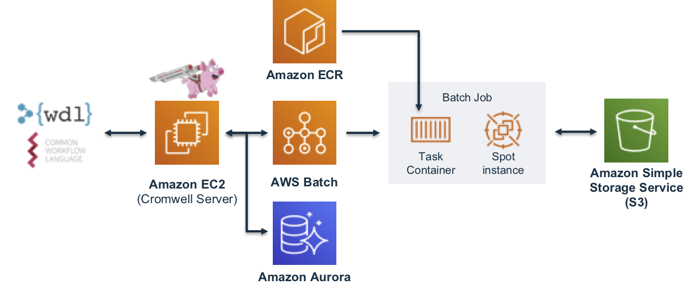

Cromwell on AWS Batch

Cromwell is a workflow management system for scientific workflows developed by the Broad Institute and supports job execution using AWS Batch.
Requirements
To get started using Cromwell on AWS you'll need the following setup in your AWS account:
- A VPC with at least 2 private subnets
- The Genomics Workflow Core Environment
- EC2 Instance as a Cromwell Server
- RDS Cluster for the Cromwell metadata database
The following will help you deploy these components.
VPC
Cromwell uses a relational database for storing metadata information. In AWS you can use an RDS cluster for this. For security and availability is is recommended that your RDS cluster deploy into at least 2 private subnets. If the target VPC you want to deploy Cromwell into already has this, you can skip ahead. If not, you can use the CloudFormation template below, which uses the AWS VPC Quickstart, to create one meeting these requirements.
| Name | Description | Source | Launch Stack |
|---|---|---|---|
| VPC (Optional) | Creates a new Virtual Private Cloud to use for your genomics workflow resources. | cloud_download | play_arrow |
Genomics Workflow Core
To launch the Genomics Workflow Core in your AWS account, use the CloudFormation template below.
| Name | Description | Source | Launch Stack |
|---|---|---|---|
| Genomics Workflow Core | Create EC2 Launch Templates, AWS Batch Job Queues and Compute Environments, a secure Amazon S3 bucket, and IAM policies and roles within an existing VPC. NOTE: You must provide VPC ID, and subnet IDs. | cloud_download | play_arrow |
The core is agnostic of the workflow orchestrator you intended to use, and can be installed multiple times in your account if needed (e.g. for use by different projects). Each installation uses a Namespace value to group resources accordingly. By default, the Namespace is set to the stack name, which must be unique within an AWS region.
See the Core Environment For more details on the core's architecture.
Cromwell Resources
The following CloudFormation template will create a Cromwell server instance and, an RDS Aurora Serverless database cluster.
| Name | Description | Source | Launch Stack |
|---|---|---|---|
| Cromwell Resource | Create resources needed to run Cromwell on AWS: an RDS Aurora database, an EC2 instance with Cromwell installed as a server, and an IAM instance profile | cloud_download | play_arrow |
Important
The Namespace parameter in this template configures Cromwell and associates it with a specific Genomics Workflow Core.
Once created, you can access the server instance in a web browser via the instance's public DNS name which can be found on the Outputs tab for the stack in the CloudFormation Console. There you should see Cromwell's SwaggerUI, which provides a simple web interface for submitting workflows.
Info
The server instance uses a self-signed certificate and is configured for HTTPS access. You may get a security warning from your web-browser when accessing it. In a production setting, it is recommended to install a certificate from a trusted authority.
The CloudFormation template above also configures the server with integration to Amazon CloudWatch for monitoring Cromwell's log output and AWS Systems Manager. The private key that you referenced in the CloudFormation template allows SSH terminal access and performing any maintenance on the instance. In addition the server instance can be managed from AWS Systems Manager.
Deployment Details
Cromwell Database
Cromwell uses a relational database to store workflow metadata and caching information. By default, Cromwell will use an in-memory database, which is sufficient for ephemeral, single workflow use. However, for more scalability and to fully take advantage of workflow caching capabilities, it is recommended to use a dedicated and persistent database that is separate from the instance Cromwell is running on. The CloudFormation template will deploy an RDS Aurora MySQL instance and configure the server to connect to this DB
Cromwell server
The CloudFormation template above launches an EC2 instance as a persistent Cromwell server. You can use this server as an endpoint for running multiple concurrent workflows. This instance needs the following:
- Java 8
- The latest version of Cromwell with AWS Batch backend support (v52+)
- Permissions to
- read from all S3 buckets used for input and output data
- submit / describe / cancel / terminate jobs on AWS Batch queues
These permissions are granted to the server instance via an instance profile. This allows an EC2 instance to assume an IAM role and call other AWS services on your behalf.
The specific IAM policies used in the instance profile are shown below.
Access to AWS Batch
Lets the Cromwell server instance submit and get info about AWS Batch jobs.
{
"Version": "2012-10-17",
"Statement": [
{
"Sid": "CromwellServer-BatchPolicy",
"Effect": "Allow",
"Action": [
"batch:DescribeJobQueues"
"batch:DeregisterJobDefinition"
"batch:TerminateJob"
"batch:DescribeJobs"
"batch:CancelJob"
"batch:SubmitJob"
"batch:RegisterJobDefinition"
"batch:DescribeJobDefinitions"
"batch:ListJobs"
"batch:DescribeComputeEnvironments"
],
"Resource": "*"
}
]
}
If you want to further limit Cromwell's access to compute resources - e.g. to specific job queues - you can scope down the above policy as needed by explicitly specifying Resources.
Access to S3
Lets the Cromwell server instance read and write data from/to S3. Specifically, Cromwell needs access to the return code files (rc.txt) generated by each job to track job status. In addition, this should also include any open dataset buckets you may need to read from for your workflows since Cromwell will need to perform HeadObject and ListBucket operations when determining job inputs for tasks.
{
"Version": "2012-10-17",
"Statement": [
{
"Sid": "CromwellServer-S3Policy",
"Effect": "Allow",
"Action": "s3:*",
"Resource": [
"arn:aws:s3:::<bucket-name>",
"arn:aws:s3:::<bucket-name>/*",
]
}
]
}
Configuring Cromwell to use AWS Batch
The following is an example *.conf file to use the AWSBackend.
// cromwell.conf
include required(classpath("application"))
webservice {
interface = localhost
port = 8000
}
aws {
application-name = "cromwell"
auths = [{
name = "default"
scheme = "default"
}]
region = "<your-region>"
}
database {
profile = "slick.jdbc.MySQLProfile$"
db {
driver = "com.mysql.cj.jdbc.Driver"
url = "<db-url>"
user = "cromwell"
password = "<cromwell_password>"
connectionTimeout = 5000
}
}
call-caching {
enabled = true
invalidate-bad-cache-results = true
}
engine { filesystems { s3 { auth = "default" } } }
backend {
default = "AWSBATCH"
providers {
AWSBATCH {
actor-factory = "cromwell.backend.impl.aws.AwsBatchBackendLifecycleActorFactory"
config {
numSubmitAttempts = 10
numCreateDefinitionAttempts = 10
root = "s3://<your-s3-bucket-name>"
auth = "default"
default-runtime-attributes { queueArn = "<your-queue-arn>" , scriptBucketName = "<your-bucket-name>" }
filesystems {
s3 {
auth = "default"
duplication-strategy: [
"hard-link", "soft-link", "copy"
]
}
}
}
}
}
}
The above file uses the default credential provider chain for authorization.
Replace the following with values appropriate for your account and workload:
<your region>: the AWS region your S3 bucket and AWS Batch environment are deployed into - e.g.us-east-1<db-url>: the JDBC url of the Cromwell metadata database<cromwell-password>: the password of thecromwelluser in the metadata database. This value can also be supplied as a Java command line variable.<your-s3-bucket-name>: the name of the S3 bucket you will use for inputs and outputs from tasks in the workflow.<your-queue-arn>: the Amazon Resource Name of the AWS Batch queue you want to use for your tasks.
Accessing the Cromwell server
The Cromwell EC2 instance may be accessed using the AWS Session Manager via console or in the terminal with the command aws ssm start-session --target <instance-id>.
Please note that by default this will log you in as user ec2-user in the directory /usr/bin. You may prefer to become the ec2-user with the command sudo su - ec2-user which will switch you to that user's home directory.
Stop / Start / Restart the Cromwell service
The CloudFormation template above installs Cromwell as a service under the control of supervisorctl. If you need to make changes to the cromwell.conf file you will want to restart the service so that configuration changes are included.
supervisorctl restart cromwell-server
supervisorctl start and supervisorctl stop are also supported.
Running a workflow
To submit a workflow to your Cromwell server, you can use any of the following:
- Cromwell's SwaggerUI in a web-browser
- a REST client like Insomnia or Postman
- the command line with
curlfor example:
curl -X POST "http://localhost:8000/api/workflows/v1" \
-H "accept: application/json" \
-F "workflowSource=@workflow.wdl" \
-F "workflowInputs=@inputs.json" \
-F "workflowOptions=@options.json"
Workflow logs
After submitting a workflow, you can monitor the progress of tasks via the
AWS Batch console. Cromwell server logs are captured in the cromwell_server
log group and the logs of the AWS Batch jobs that run each task in the workflow
can be found in the /aws/batch/jobs CloudWatch log group.
The next section provides some examples of running Crommwell on AWS.
Cost optimizing workflows
Optimizing the allocation of resources to your workflows can help you to reduce costs